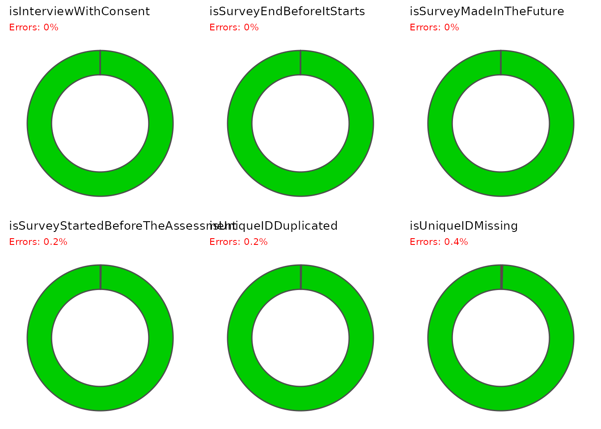
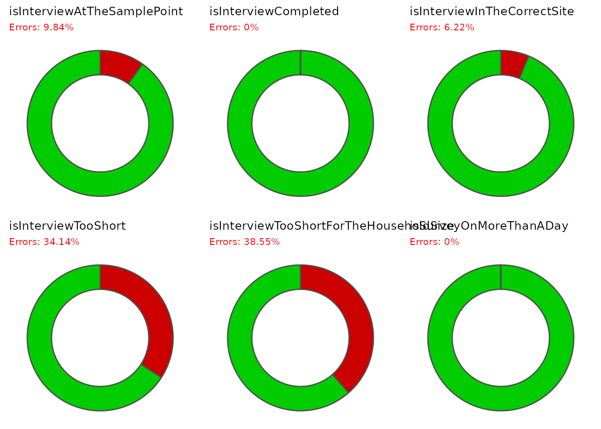
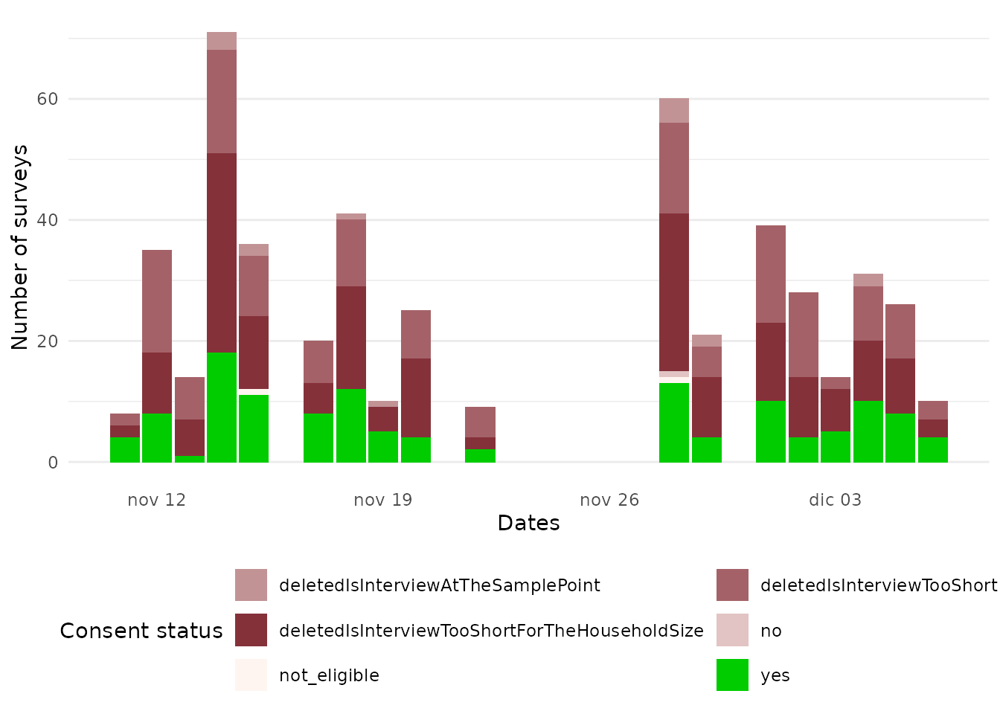
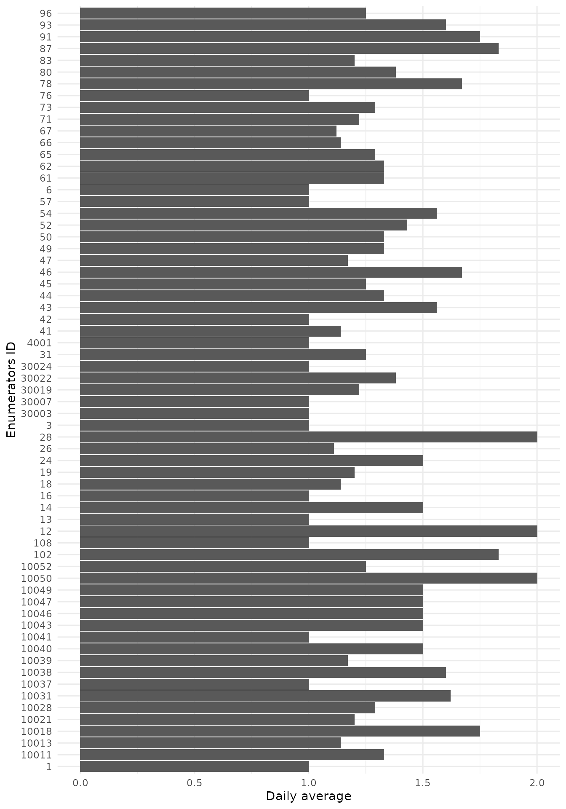
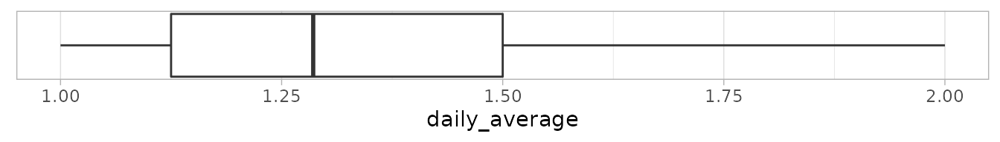
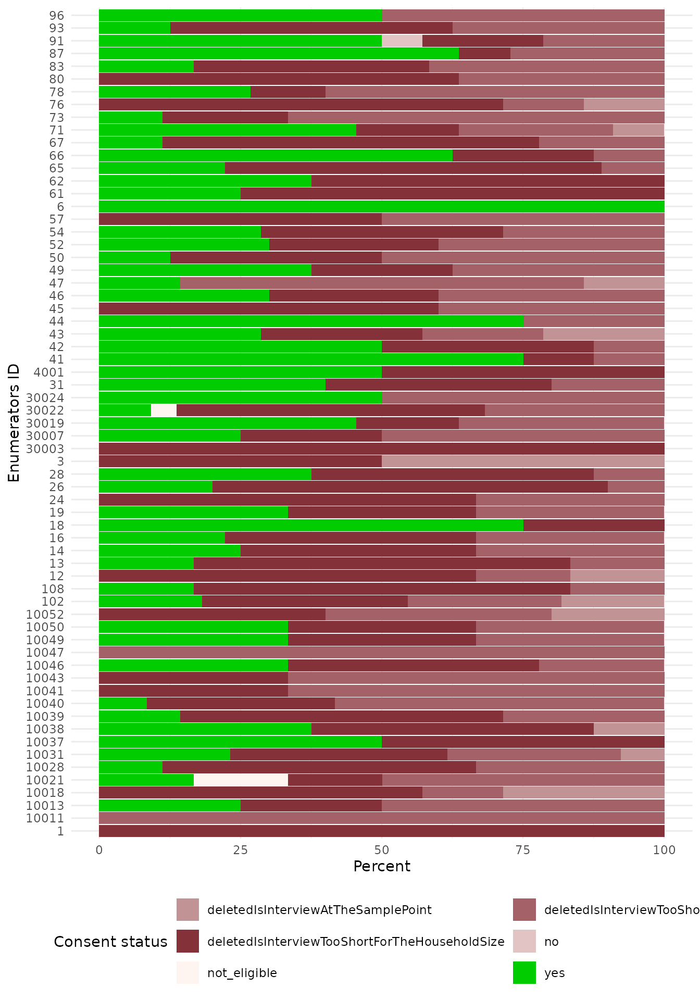

HFC2.Rmd## Warning in wkt(obj): CRS object has no comment
## Warning in wkt(obj): CRS object has no comment## Warning in sp::proj4string(bufferSHP): CRS object has comment, which is lost in
## output| Questions | Lower bound | Upper bound |
|---|---|---|
| consent_received.food_security.spend_clothing | 200 | 5000 |
| consent_received.food_security.spend_communication | 100 | 1000 |
| consent_received.food_security.spend_debts | 500 | 25000 |
| consent_received.food_security.spend_education | 400 | 10000 |
| consent_received.food_security.spend_fix_shelter | 300 | 5000 |
| consent_received.food_security.spend_food | 400 | 25000 |
| consent_received.food_security.spend_fuel | 100 | 15000 |
| consent_received.food_security.spend_hh_items | 100 | 5000 |
| consent_received.food_security.spend_hygiene | 300 | 10000 |
| consent_received.food_security.spend_medication | 250 | 15000 |
| consent_received.food_security.spend_other | 500 | 25000 |
| consent_received.food_security.spend_rent | 300 | 25000 |
| consent_received.food_security.spend_tobacco | 100 | 1000 |
| consent_received.food_security.spend_transport | 100 | 1000 |
| minimumAnswers | |
|---|---|
| consent_received.shelter_nfi.non_food_items | 3 |
| consent_received.food_security.main_income | 2 |
| consent_received.child_protection.boy_risk | 3 |
| consent_received.child_protection.girl_risk | 3 |
The total time of data collection is 17872.7 minutes and the average time per survey is 35.89 minutes
| reportassessmentDailyValidSurveys | reportisInterviewTooShortForTheHouseholdSize |
| reportassessmentDuration | reportisInterviewWithConsent |
| reportassessmentDurationOutliers | reportisSurveyEndBeforeItStarts |
| reportassessmentProductivity | reportisSurveyMadeInTheFuture |
| reportassessmentTrackingSheet | reportisSurveyOnMoreThanADay |
| reportenumeratorErrorsDashboard | reportisSurveyStartedBeforeTheAssessment |
| reportenumeratorIsLazy | reportisUniqueIDDuplicated |
| reportenumeratorProductivity | reportisUniqueIDMissing |
| reportenumeratorProductivityOutliers | reportsurveyBigValues |
| reportenumeratorSurveysConsent | reportsurveyDistinctValues |
| reportenumeratorSurveysDuration | reportsurveyMissingValues |
| reportisInterviewAtTheSamplePoint | reportsurveyOtherValues |
| reportisInterviewCompleted | reportsurveyOutliers |
| reportisInterviewInTheCorrectSite | reportsurveySmallValues |
| reportisInterviewTooShort |
These errors are most likely linked to some issues with the phones/ tablets used for the data collection, server configuration or connectivity issues.

These errors are most likely linked to some lack of technical training of the enumerators, like proper use of a GPS, being certain the survey is ended in the tool used for the data collection before moving to the next one. Or to some bad behaviours for the surveys marked as too short.

Follow-up on the daily productivity taking into account the surveys status to get a closer look on the ones which would be usable at the end.

Basic average number of surveys made daily by each enumerators (based on the number of days the enumerators worked).

The productivity distribution, in combination with the Productivity, could be usefull to identify enumerators who are particularly performent or on the other hand not enough. Keeping in mind an enumerator who over performed could be an enumerator who is cheating. A further analysis crossed with the Percentage of valid surveys, the Survey duration distribution and the time spend per question could help to identify the way the duration distribution has to be interpreted.

Within all the surveys made by each enumerator, what is the percentage of them which could be used for the assessment analysis.

The survey duration distribution per enumerator could be useful to identify enumerators which are consistent (i.e. having similar duration for each of their surveys made). Be aware that a consistent survey durations could be interpreted in different ways, it could be seen as a good thing, meaning the enumerator on the overall takes similar time to ask the questions, but it could also be interpreted as a negative sign if we assume the enumerator is filling the survey by himself and monitoring his time to not have a short overall duration. A closer monitoring of the time spend per question could help to identify the way the duration distribution has to be interpreted.
